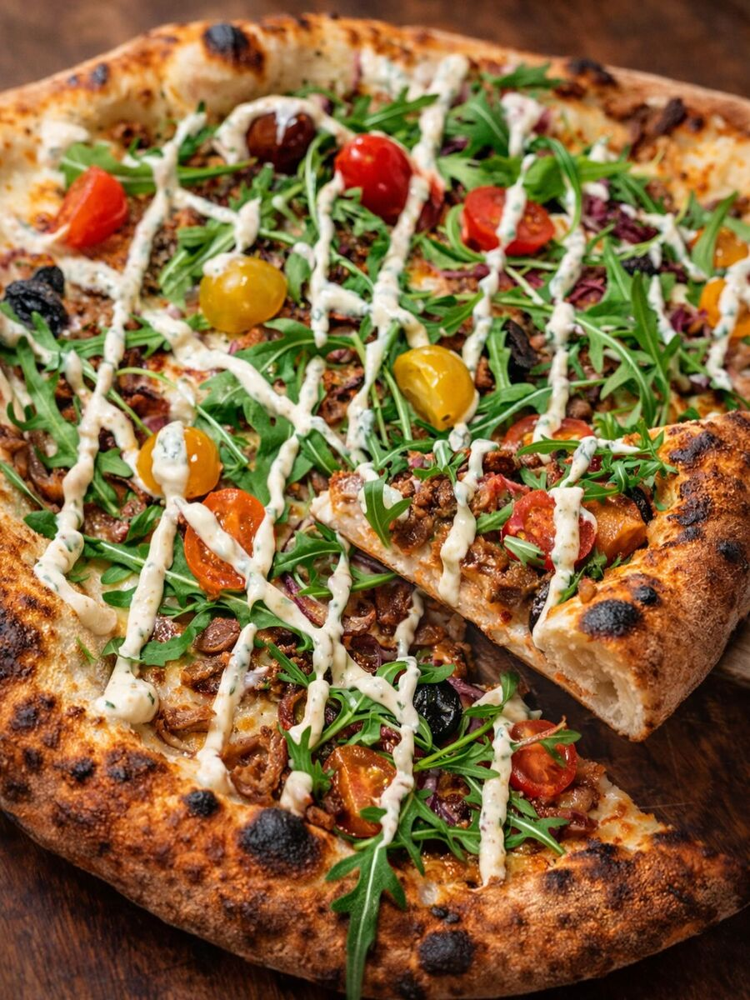
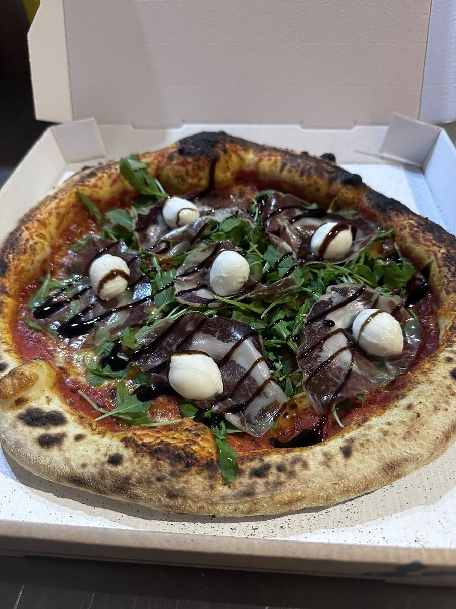
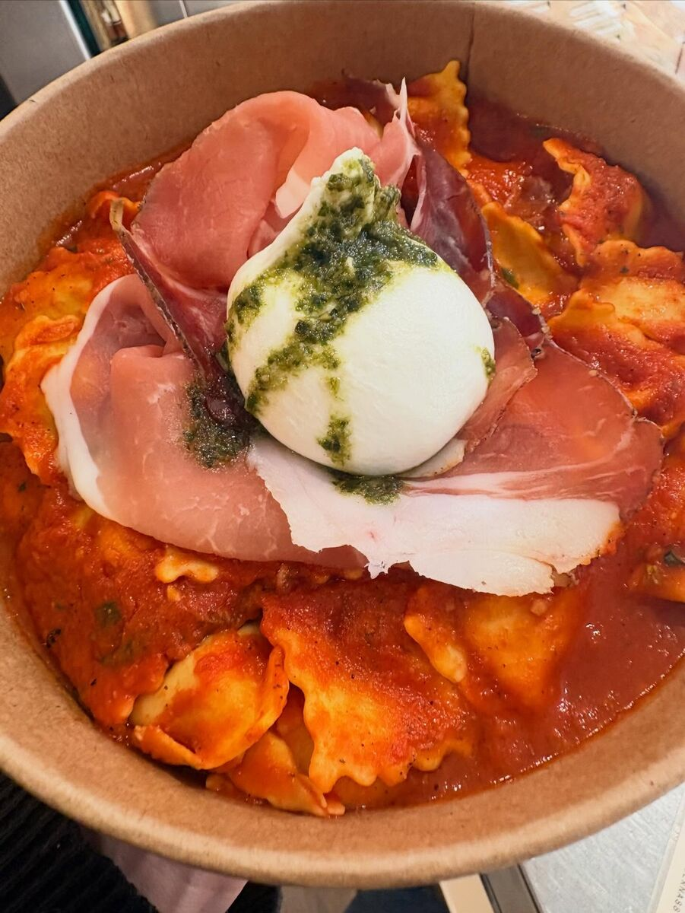
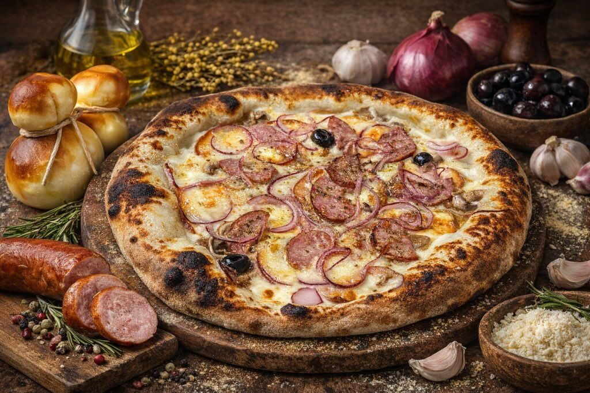

Pizzeria artisanale ● Traiteur italien ● Epicerie fine
Par un vrai chef sicilien
Chez CasaMia, chaque pizza raconte une histoire. Celle d'un chef sicilien qui a apporte les saveurs authentiques de son ile natale au coeur du Vaucluse. Des produits importes directement de Sicile, des recettes transmises de generation en generation.
Pas d'imitation. Notre chef est ne en Sicile, forme en Sicile, et cuisine comme en Sicile. Chaque recette est un hommage a sa terre natale.
Farine de ble dur, tomates San Marzano, huile d'olive extra-vierge, anchois de Sciacca... Nous importons ce qui fait la difference.
Plus de 247 avis verifies. Nos pizzas, nos arancini, nos cannoli... Tout est fait maison, avec passion. Et ca se goute.
Des pizzas cuites au feu de bois, avec une pate levee 48h. Croustillante, moelleuse, parfumee. Comme a Palerme.
Voir la carte des pizzas →Anniversaire, mariage, repas d'entreprise... Nous creons des buffets siciliens memorables. Arancini geants, caponata, panelle, cannoli... Tout est fait maison.
Decouvrir nos formules traiteur →Huiles, pates artisanales, conserves, vins... Notre epicerie rassemble le meilleur des producteurs siciliens. Des produits introuvables ailleurs.
Explorer l'epicerie →





"Ce soir je viens de manger la meilleure pizza raclette de ma vie. Votre jambon est un pur délice !!! Et la pâte d'une légèreté peu commune... Un régal"
"Excellent ! Longtemps que je n'avais pas mangé une aussi bonne pizza, pâte longue fermentation, garnie généreusement, de bons ingrédients, le tout pour 12 euros. Accueil au top en prime."
"Une cuisine italienne d'exception à des prix plus qu'abordables, ce repas fût un pur moment de plaisir ! L'accueil est très convivial et chaleureux, la gérante très souriante, solaire !"
"Au Top qualité prix excellent y a pas mieux. Ne cherchez pas ailleurs, Avignon hors de prix et qualité très moyenne. Ici accueil très agréable et pizza excellente."
"Je recommande vivement cette épicerie fine et traiteur sicilien. Les produits sont toujours excellents, on sent vraiment la qualité et l'authenticité dans tout ce qu'ils proposent."
"Si vous aimez les pizzas à croûtes épaisses et bien garnies, alors vous êtes à la bonne adresse. Elles sont excellentes et j'apprécie d'avoir des pizzas que je ne retrouve pas ailleurs."
CasaMia vous attend a Entraigues-sur-la-Sorgue. Sur place, a emporter, ou en livraison. Commandez des maintenant.